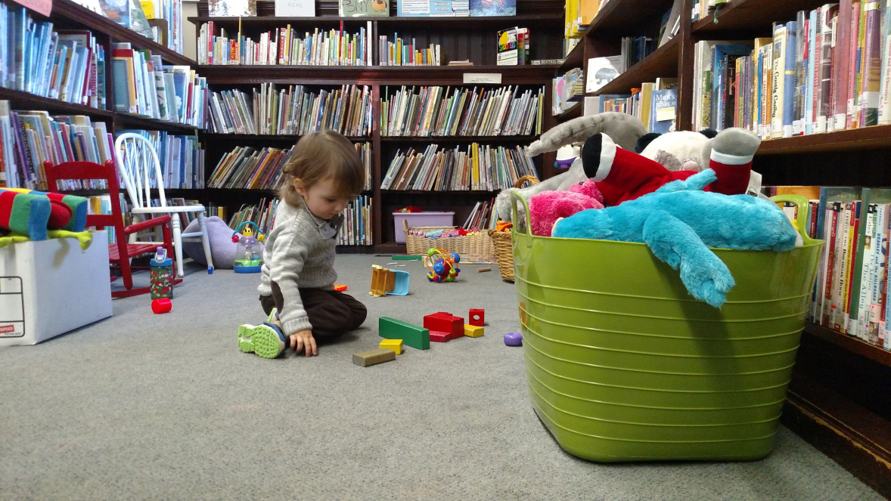

Welcome to the Everett C. Benton Library
The historic Everett C. Benton Library is a non-profit independent library run by volunteers and supported entirely by donations. The library is located at 75 Oakley Road in Belmont, MA, at the corner of Oakley and Old Middlesex Roads.
Thanks to the many people who have stepped forward to volunteer, the Benton Library is now almost fully staffed. Look for the OPEN flag.
Tuesdays 10am–12pm; Wednesdays and Fridays 2–7pm; Fridays 10am–12pm; and Saturdays 2–5pm.
We will continue to provide curbside pick up; email us at ecbentonlibrary@gmail.com to make a request. Free books will continue to be available in the lobby.
The Benton Library is a lending library with over 7,500 catalogued books including a robust selection of best sellers and mysteries, as well as a wonderful, ever expanding children's and young adult collection. Library cards are free and available to all; you do not need to be a Belmont resident to borrow books. We have computers available for public use and free wi-fi.
The Everett C. Benton Library established itself as a self-sustaining community resource in 2011. It is successful thanks to the many people who are involved in staffing and maintaining the library and to our generous financial supporters. We are grateful to our many individual donors, the Belmont Savings Bank Foundation and the Belmont Cultural Council.
We look forward to welcoming everyone back to the Everett C. Benton Library.